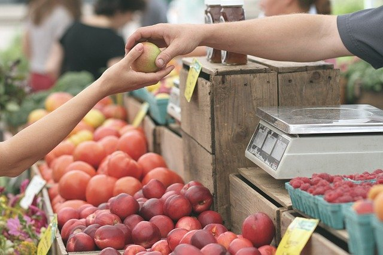

Las bebidas sin alcohol tienen gran capacidad de adaptación e inundan el mercado cada vez con más variantes. ¿Quiere que sus productos destaquen entre la multitud? En ese caso debería apostar por una ingeniería de procesos que esté a la altura de sus ideas y dé alas a su imaginación en lugar de limitarla. ¿Cómo puede conseguir esto? En Krones, pues nuestra ingeniería de procesos se adapta a su visión, no a la inversa. Haga la prueba. Ya sean zumos o refrescos, bebidas carbonatadas o sin gas, clásicos o nuevas creaciones, le proporcionamos una solución que estará a la altura de su producto y de su producción al 100 %.
